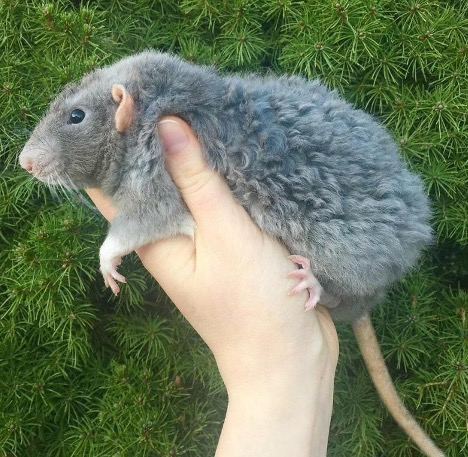

| Порода | Описание | Уход |
|---|---|---|
| Рекс | Очень дружелюбные и активные крысы, легко приручаются.  | Нуждаются в просторном клетке и регулярных прогулках. |
| Дамбо | Наиболее распространённая порода, хорошая для новичков. | Требуют сбалансированного рациона и чистоты в клетке. |
| Сфинксы | Редкая порода с уникальной внешностью, очень умные. | Нуждаются в много внимания и разных игрушках. |
| Бурманская крыса | Спокойные и ласковые, хорошо ладят с детьми. | Кормить разнообразной пищей и обеспечивать досуг. |